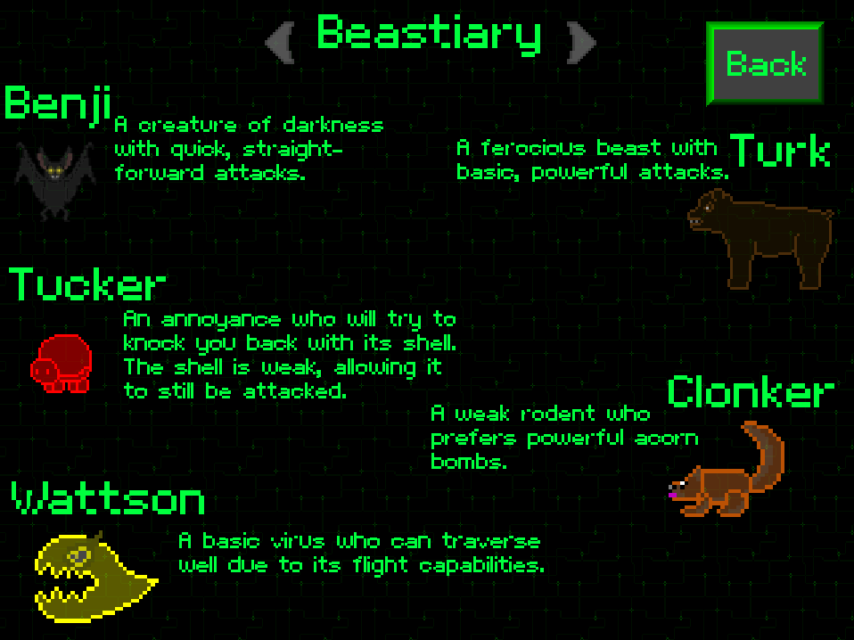
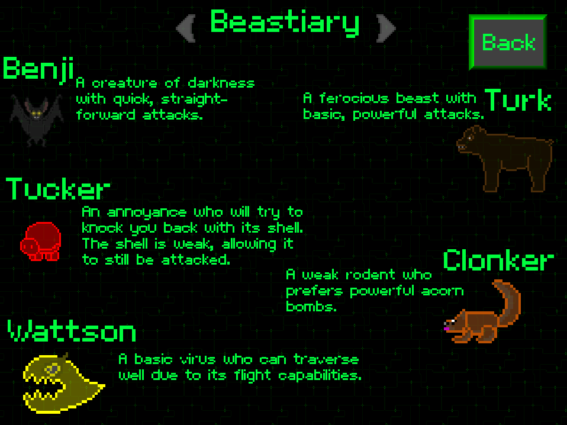
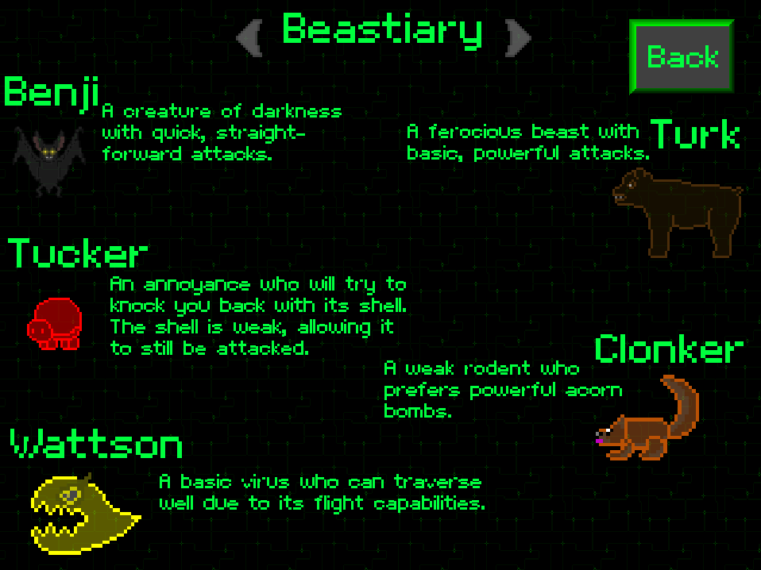
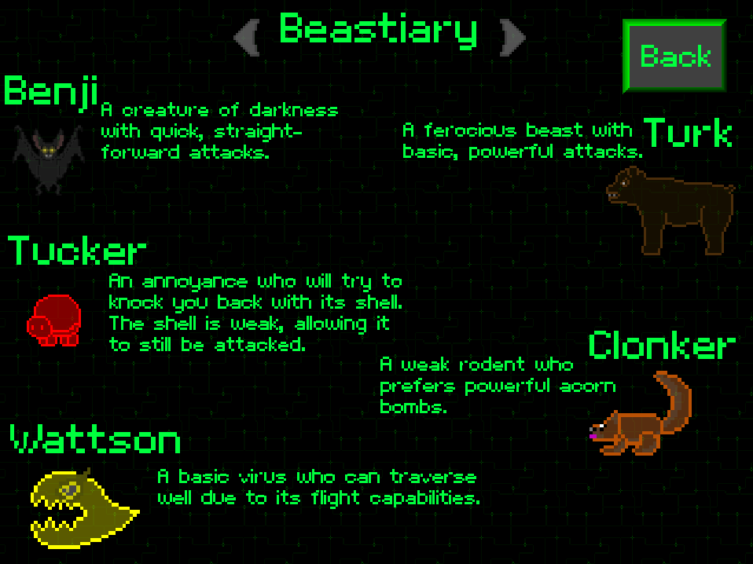

Resist! is a game created as a learning device to aid students in the understanding of electronic circuits and their various subcomponents - in this case, resistors. It was created in Game Maker using its proprietary programming language, GML. The circuits that must be completed are chosen randomly from a pool of different pre-determined puzzles. The levels are also pre-determined, but the biome of each level can vary between playthroughs; map objects query the global biome variable to update their graphics. The game itself is themed as taking place inside of a computer that has been taken over by a virus. There is a virus enemy for each color, and they drop colored bands that are used to craft resistors (resistors have these bands to indicate their resistance in ohms).
I acted as the sole programmer in our group of five, so all of the actual gameplay programming was on me. I also did some of the pixel art, including some level tilesets, the resistors, and some of the enemies.
My programming skill has grown immensely since this project, but I leave it here because I believe it displays important qualities, such as growth and an early passion. I taught myself GML, so this project occurred during a moment in my life when I was learning to program for the first time. There have been times where I've been tempted to go back and clean it up, largely just for old times' sake, but I'm honestly afraid to go back and look at my own new programmer code. That being said, I'm very happy with how well the actual learning is integrated with the game and its mechanics. Crafting resistors is your entire purpose in the game, and you physically can't progress without solving the circuit puzzles, which is important.